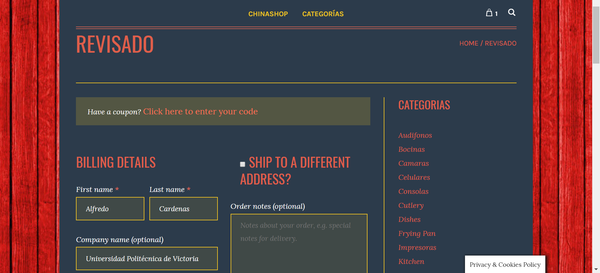

- Pagina Principal
En la ventana principal el cliente podrá observar algunas de las promociones vigentes y los productos más populares de nuestra tienda, esta pantalla es dinámica así que es probable que cambien algunas de las imágenes, pero la estructura seguirá siendo la misma.
Casi en la parte final de la página principal, se encontrara un apartado de tutorial, en el cual se encuentra un video que le explicara de manera detallada como utilizar la tienda online, este apartado siempre estará disponible para que el cliente pueda recurrir al video cuando lo desee.
En todas las páginas de la tienda siempre estará disponible la barra superior, en la cual el usuario podrá navegar a la página principal o buscar alguna de las categorías disponibles. Esta barra estará visible en todo momento, sin importar a que página navegue.
En la página principal se mostraran alguno de los productos más vendidos y los que tienen ofertas, en esta pantalla se mostrara el nombre del producto, categoría y precio. Para poder ver más información del producto solo basta con presionar el título del producto y esto lo llevara a una página en donde se muestra toda la descripción de dicho producto, así como comentarios de clientes que han comprado dicho producto.
Para añadir rápidamente un producto al carrito solo es necesario pasar el cursor por encima del producto deseado y aparecerá un mensaje ‘Agregar a carrito’, al presionar el botón se añadirá automáticamente al carrito y se verá reflejado en el icono que se encuentra en la parte superior derecha de la ventana, además de salir un mensaje emergente que describe el producto agregado.
En caso de que desee pagar el producto que selecciono, deberá pasar el cursor por encima del icono del carrito (‘Bolsa’), al hacer esto aparecerá una ventana emergente con dos mensajes, ‘Ver carrito’ y ‘Verificar’. Para continuar con el pago deberá presionar ‘Verificar’ los cual lo enviara a la página de pago, la cual se explicara mas adelante.
- Pagina de producto
Al presionar alguno de los productos se enviara a una página en la cual se muestra más información detallada sobre el producto seleccionado, en esta página se podrán observar la descripción, precio, ofertas y comentarios de otros compradores.
A un lado del producto aparecerá una sección de categorías, esto para que el usuario pueda navegar rápidamente hacia alguna categoría en específico, al presionar alguno de las categorías lo enviara a una página donde solo se mostraran una lista con imágenes de los productos.
En la página del producto podrá encontrar recomendaciones de compra, esto estará ubicado en la parte inferior de la página, donde se mostraran 3 productos relacionados con su historial, esto para ofrecer un mejor servicio.
- Pagina de pago
Para finalizar la compra, es necesario ir a la página de revisado, en la cual el usuario deberá ingresar la información personal y de envió, además de verificar que la compra es realmente lo que quiere.

En esta ventana el usuario deberá llenar un formulario con su información personal y de envió para realizar la compra, estos datos se utilizara únicamente con el fin de realizar el envió a su domicilio
Debajo del formulario sobre información de envió se mostrara el coste de cada producto, el total y el coste de envió. Esto con el fin de que el usuario conozca el total a pagar antes de proceder con el pago de la cuenta, en este punto el usuario puede cancelar o eliminar productos de su carrito por cualquier motivo.
Una vez llenado el formulario y verificado el precio a pagar deberá elegir un método de pago, actualmente solo se cuenta con pagos mediante PayPal, y posteriormente aceptar los términos y condiciones de nuestra tienda.
Y finalmente deberá presionar el botón ‘Proceder con el pago’, el cual enviara al usuario a una nueva ventana del dominio de PayPal, en la cual el cliente deberá iniciar sesión con su cuenta y confirmar el pago desde la página de PayPal.
Al finalizar el pago se mostrara una página donde se confirma el pago.